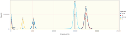
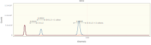

Measuring the Coating Thickness
Nicholas W. M. Ritchie, 13-Apr-2020; updated 11-May-2020
Often it is necessary to add a thin conductive coating to the surface of non-conductive samples to minimize the accumulation of electrical charges on or near the surface. When these charges accumulate they can deflect and distort the beam and reduce the effective beam energy.
While the coatings are typically a thin as practical to produce the desired conductivity, the material in the coating can influence the transport of electrons and X-rays in the sample. This is particularly true for soft X-rays like the K lines of Be, B, C, N, O and F or the L- or M-lines of similar energies. The most common coating material is amorphous carbon deposited from a thread or hot filament although sputtered metal coatings like gold or gold-palladium are favored by some.
A common strategy for dealing with coatings has two parts. First, the thickness of the coating is measured using a oscillating quartz crystal film thickness monitor. Second, the sample and the references are coated simultaneously to ensure similar coating thicknesses. The thickness of the coating is then compensated in the matrix correction algorithm - usually as an additional absorption correction term.
An alternative strategy is to measure the thickness of the coating using the X-ray signal generated by the coating. This requires providing a standard spectrum for a coating element and measuring the k-ratio of this element in the sample and the other standards. It is necessary that the measured coating element not be present in the material. For example, it is possible to measure a thin oxidization layer on aluminum using an oxygen standard like alumina (Al₂O₃) or magnesia (MgO).
While it is possible to measure the coating element using WDS, it is trivial using EDS. This information is always available in the measured and standard spectra. All that is necessary is to provide a bulk standard for the coating element in the fitting process.
A simple strategy for calculating the k-ratio of a ultra-thin coating on a substrate uses the bulk ϕ(ρz) correction for the coating element in the substrate material to estimate the effective k-ratio. This requires knowledge of the composition of the substrate. In the case of standards, this is available. For unknowns, an estimated composition can be updated in the iteration algorithm. A root-finding algorithm can then be used to solve for the thickness that produces the measured k-ratio.
The Calculation
First, load 'NeXLSpectrum' to read and fit the spectra and 'NeXLMatrixCorrection' for k-ratio related calculations.
using NeXLSpectrum
using NeXLMatrixCorrection
using DataFrames # To tabulate the k-ratios
using Gadfly # To plot the fit residualThen read in the spectra - SiO₂ as the measured material, Si, Al₂O₃ and C as the references.
path=joinpath(@__DIR__, "spectra")
sio2=loadspectrum(joinpath(path,"SiO2_StdC_15kV7p5nA130kHz_300s.msa"))
si =loadspectrum(joinpath(path,"Si_StdC_15kV7p5nA130kHz_132kHz24DT_100s.msa"))
al2o3 = loadspectrum(joinpath(path,"Al2O3_StdC_15kV7p5nA130kHz_300s.msa"))
c = loadspectrum(joinpath(path,"C_StdC_15kV7p5nA130kHz_48kHz9DT_100s.msa"))
e0, toa = sameproperty([sio2,si,al2o3,c], :BeamEnergy), sameproperty([sio2,si,al2o3,c], :TakeOffAngle)
plot(sio2, si, al2o3, c, klms=[n"Si", n"Al", n"O", n"C" ], xmax=2.5e3)
Build a detector model with details from the spectrum and an estimate of the resolution and low-level discriminator channel.
det = BasicEDS(length(sio2), energy(1, sio2), channelwidth(1, sio2), 128.0, 120)
filt = buildfilter(det)NeXLSpectrum.VariableWidthFilter[NeXLSpectrum.BasicEDS(4096, E[ch] = -482.8
3378 + 5.003319999999974⋅ch, 128.0 eV @ Mn K-L3, 120, Dict{Shell,Element}(S
hell[L] => Element(Scandium),Shell[K] => Element(Beryllium),Shell[N] => Ele
ment(Plutonium),Shell[M] => Element(Barium)))]Create fitting filters for each element we require from the references.
refdata = (
( al2o3, n"O", mat"Al2O3" ),
( si, n"Si", mat"Si" ),
( c, n"C", mat"C" ),
)
frs = mapreduce(ref->filterreference(filt, ref...), append!, refdata)3-element Array{NeXLSpectrum.FilteredReference,1}:
Reference[O K-L3 + 1 other]
Reference[Si K-L3 + 2 others]
Reference[C K-L2]Now with the fitting filters and the measured SiO₂ spectrum we can perform the fit of Si, O and C to SiO₂.
res = fit(sio2, filt, frs)
display(plot(res))
NeXLUncertainties.asa(DataFrame, kratios(res))3×12 DataFrame
│ Row │ Element │ Z │ Lines │ E0unk │ E0std │ θunk
│ θstd │ Standard │ Cstd │ ΔCstd │ K │ ΔK │
│ │ String │ Int64 │ Array{CharXRay,1} │ Float64 │ Float64 │ Float64
│ Float64 │ String │ Float64 │ Float64 │ Float64 │ Float64 │
├─────┼─────────┼───────┼────────────────────┼─────────┼─────────┼─────────
─┼──────────┼──────────┼──────────┼─────────┼───────────┼─────────────┤
│ 1 │ O │ 8 │ O K-L3 + 1 other │ 15000.0 │ 15000.0 │ 0.698132
│ 0.698132 │ Al2O3 │ 0.470749 │ 0.0 │ 0.992173 │ 0.000449488 │
│ 2 │ C │ 6 │ C K-L2 │ 15000.0 │ 15000.0 │ 0.698132
│ 0.698132 │ C │ 1.0 │ 0.0 │ 0.0124119 │ 3.91605e-5 │
│ 3 │ Si │ 14 │ Si K-L3 + 2 others │ 15000.0 │ 15000.0 │ 0.698132
│ 0.698132 │ Si │ 1.0 │ 0.0 │ 0.430509 │ 0.000101609 │From the k-ratios, we can determine the mass-thickness of the carbon layer on the SiO₂ sample.
k = value(findlabel(res, n"C K-L2"),res)
ρz = massthickness(XPP, mat"SiO2", mat"C", n"C K-L2", sio2[:BeamEnergy], sio2[:TakeOffAngle], k)
print("The thickness is $(round(ρz*1.0e7/density(pure(n"C")); sigdigits=3)) nm.") # Convert g/cm² to nm of amorphous carbon (1.9 g/cm³)The thickness is 24.4 nm.ρz = massthickness(CitZAF, mat"SiO2", mat"C", n"C K-L2", sio2[:BeamEnergy], sio2[:TakeOffAngle], k)
print("The thickness is $(round(ρz*1.0e7/density(pure(n"C")); sigdigits=3)) nm.") # Convert g/cm² to nm of amorphous carbon (1.9 g/cm³)The thickness is 17.1 nm.Finally, we correct the measured k-ratios for Si and O to account for the carbon coating.
krs = NeXLMatrixCorrection.correctkratios(kratios(res), mat"C", ρz)
NeXLUncertainties.asa(DataFrame, krs)3×12 DataFrame
│ Row │ Element │ Z │ Lines │ E0unk │ E0std │ θunk
│ θstd │ Standard │ Cstd │ ΔCstd │ K │ ΔK │
│ │ String │ Int64 │ Array{CharXRay,1} │ Float64 │ Float64 │ Float64
│ Float64 │ String │ Float64 │ Float64 │ Float64 │ Float64 │
├─────┼─────────┼───────┼────────────────────┼─────────┼─────────┼─────────
─┼──────────┼──────────┼──────────┼─────────┼───────────┼─────────────┤
│ 1 │ O │ 8 │ O K-L3 + 1 other │ 15000.0 │ 15000.0 │ 0.698132
│ 0.698132 │ Al2O3 │ 0.470749 │ 0.0 │ 1.05011 │ 0.000475736 │
│ 2 │ C │ 6 │ C K-L2 │ 15000.0 │ 15000.0 │ 0.698132
│ 0.698132 │ C │ 1.0 │ 0.0 │ 0.0124119 │ 3.91605e-5 │
│ 3 │ Si │ 14 │ Si K-L3 + 2 others │ 15000.0 │ 15000.0 │ 0.698132
│ 0.698132 │ Si │ 1.0 │ 0.0 │ 0.431379 │ 0.000101814 │Usually, the coating compensation is handled in the matrix correction algorithm through providing coating data.